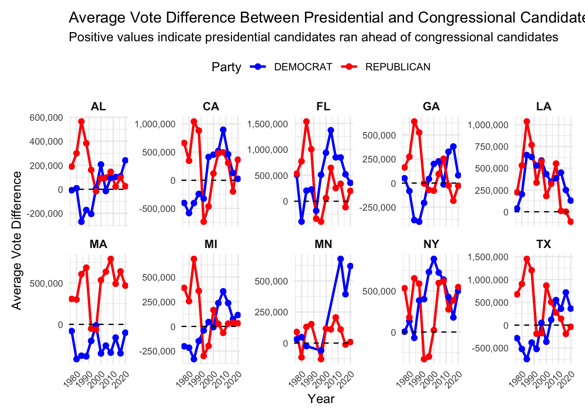
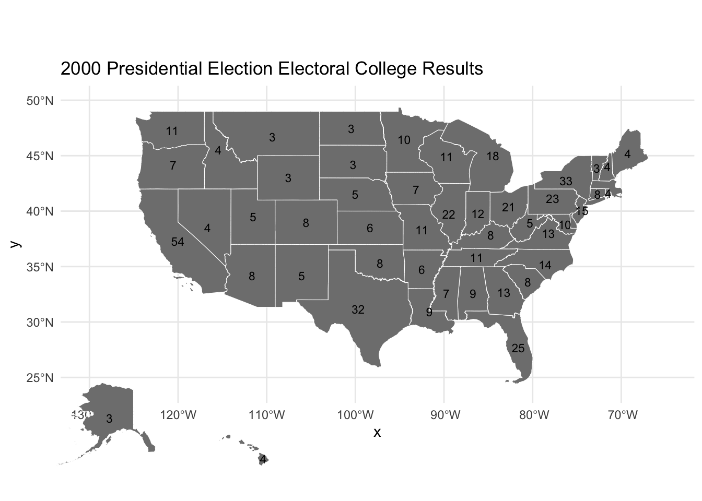
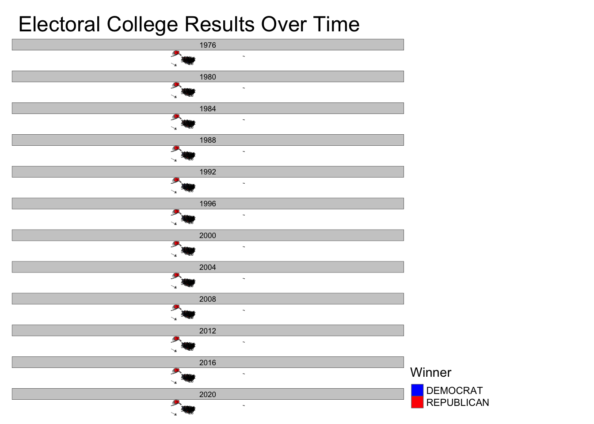
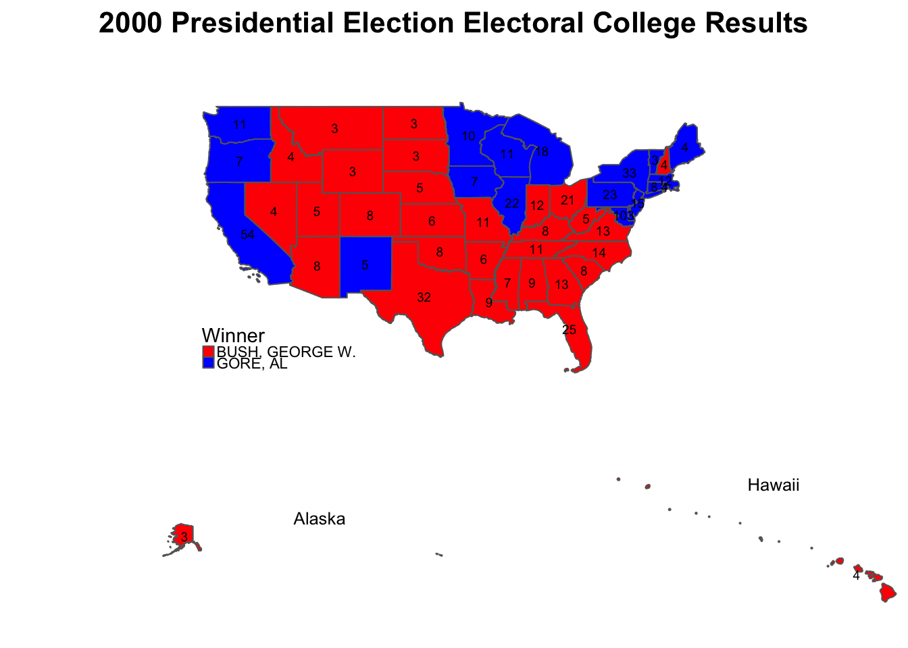
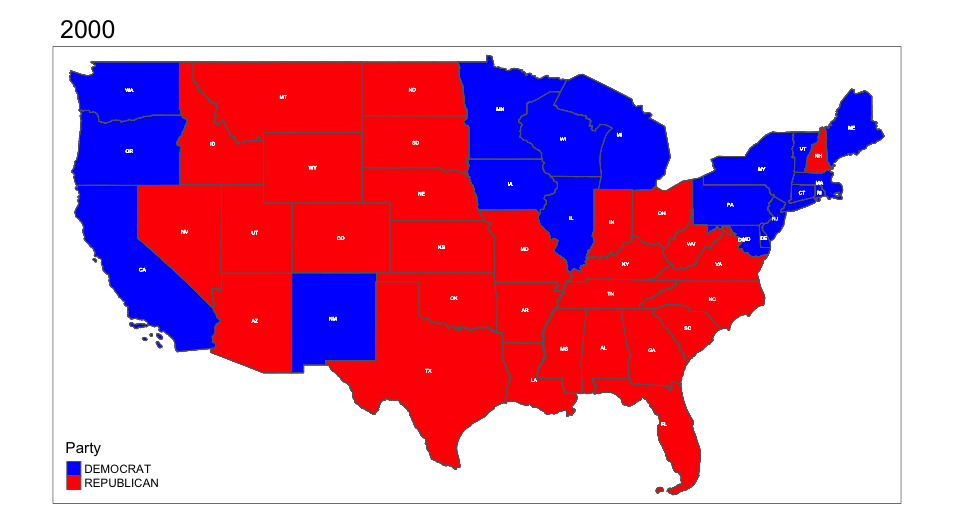
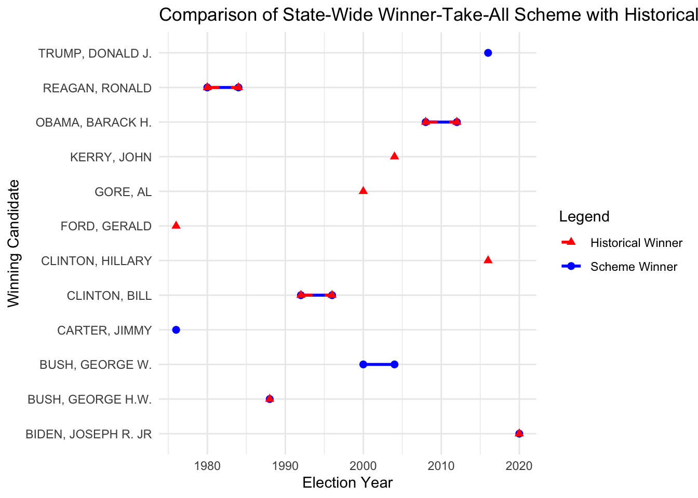

Code
library(dplyr)
library(readr)
library(stringr)
library(gt)
library(sf)
library(ggplot2)
library(scales)Abstact
This project aims to display a political fact-check, investigating the claim that the US Electoral College systemically biases election results away from the voice of the people (vox populi).
Background
As a refresh, the basic rules of electing the President of the United States, as outlined in the US Constitution is as follows. The selected visuals provide a clear understanding of how the electoral college allocates their votes in each state. For further background information, you may review the attached summary of the electoral college from the Institute For Mathematics and Democracy

Each state gets R + 2 electoral college votes, where R is the number of Representatives that state has in the US House of Representatives.
For the purposes of this project, the # of districts in a state = the # of congressional representatives

The “+2 effect” refers to the impact of the two additional electoral votes that every state receives due to its two Senate seats. While a state’s representation in the House—and therefore a portion of its electoral votes—reflects its population size, these two extra votes are the same for every state, regardless of population. As a result, individual votes in smaller states carry slightly more weight than in larger states because of this fixed “plus two” factor.

This image explains the difference between the popular vote and the electoral vote in U.S. presidential elections. Each state has a set number of electoral votes, which are generally based on its population, but every state also gets two additional votes for its senators. This can create situations where the electoral vote winner does not align with the popular vote winner.

There are several proposed ideas for reforming the Electoral College, addressing criticisms of the current winner-take-all-system, used by all states other than Maine and Nebraska today.
Maine and Nebraska split Electoral College Votes (ECVs) by congressional district.
An important note is the allocation of ECVs is decided on a state level, and is not dictated by the Constitution. Reform is possible without constitutional amendments if states decided to change their approach.
This project will walk us through different methods of ECV allocation, and see how the outcome of the US presidential elections would have changed.
This step involved downloading a dataset of the votes from all biennial congressional races in all 50 states and saving as a CSV file using a web browser. The data came from the MIT Election Data Science Lab.
Another dataset downloaded was the statewide presidential vote counts from 1976 to 2022, which may be found
The code below loads the election data into our environment.
library(dplyr)
library(readr)
library(stringr)
library(gt)
library(sf)
library(ggplot2)
library(scales)house_votes <- read_csv("~/Downloads/1976-2022-house.csv")
presidential_votes <- read_csv("~/Downloads/1976-2020-president.csv")
head(house_votes)
head(presidential_votes)Task 1: Download Congressional Shapefiles 1976-2012
&
Task 4: Automate Zip File Extraction
The congressional district shapefiles, covering U.S. congressional districts from 1789 to 2012, are provided by Jeffrey B. Lewis, Brandon DeVine, Lincoln Pritcher, and Kenneth C. Martis. These files can be accessed on the Harvard Dataverse here.
The code below automates the download of files from the 94th to the 112th Congresses (1976-2012) and extracting the shapefiles from within the zip files.
The steps taken involve:
Defining the function get_congressional_shapefile(), which automates the download and import of congressional district shapefiles for the specified range of congressional sessions (94 to 112)
Storing each shapefile in a zip archive while the function checks if the file already exists locally. If not, file is downloaded. This avoids any redundant downloads.
Unzipping downloaded zip file, and the shapefile within is read into R using read_sf()
A few additional steps were added to handle the large and complex shapefiles. The code includes a few lines involved in standardizing and simplifying the shapefiles.
The steps taken involve:
st_transform() is applied to reproject each shapefile to a common Coordinate Reference System (CRS), which uses latitude and longitude coordinates, which are useful when working with geographic data
st_simplify() simplifies the geometries of each shapefile. This reduces the number of intricate edges and details, making for improved performance while maintaining accuracy
sf_use_s2(FALSE) is set to avoid any issues with spherical geometry when simplifying data in a projected CRS
Finally, we consolidate all shapefiles into the spatial object ALL_SHAPES.
sf::sf_use_s2(FALSE)
get_congressional_shapefile <- function(congress_number) {
BASE_URL <- "https://cdmaps.polisci.ucla.edu/shp/"
fname <- paste0("districts", formatC(congress_number, width = 3, format = "d", flag = "0"), ".zip")
if (!file.exists(fname)) {
FILE_URL <- paste0(BASE_URL, fname)
download.file(FILE_URL, destfile = fname)
}
zip_contents <- unzip(fname, exdir = tempdir())
shp_file <- zip_contents[grepl("shp$", zip_contents)]
sf_data <- read_sf(shp_file)
sf_data <- st_transform(sf_data, crs = 3857)
sf_data <- st_simplify(sf_data, dTolerance = 1000)
sf_data <- st_transform(sf_data, crs = 4326)
sf_data$congress_number <- congress_number
return(sf_data)
}
ALL_SHAPES <- bind_rows(lapply(94:112, get_congressional_shapefile))Task 2: Download Congressional Shapefiles 2014-2022
Original function (not used):
get_census_shapefile <- function(year, congress_number) {
BASE_URL <- paste0("https://www2.census.gov/geo/tiger/TIGER", year, "/CD/")
fname <- paste0("tl_", year, "_us_cd", congress_number, ".zip")
if (!file.exists(fname)) {
FILE_URL <- paste0(BASE_URL, fname)
download.file(FILE_URL, destfile = fname)
}
zip_contents <- unzip(fname, exdir = tempdir())
shp_file <- zip_contents[grepl("shp$", zip_contents)]
sf_data <- read_sf(shp_file)
return(sf_data)
}
for (year in 2014:2022) {
congress_number <- if (year <= 2015) {
114
} else if (year <= 2017) {
115
} else {
116
}
sf_data <- get_census_shapefile(year, congress_number)
assign(paste0("congress_", year, "_sf"), sf_data)
}Improved functions, which combines all census congress files and adds CRS standardization and simplification:
sf::sf_use_s2(FALSE)
get_census_shapefile <- function(year, congress_number) {
BASE_URL <- paste0("https://www2.census.gov/geo/tiger/TIGER", year, "/CD/")
fname <- paste0("tl_", year, "_us_cd", congress_number, ".zip")
if (!file.exists(fname)) {
FILE_URL <- paste0(BASE_URL, fname)
download.file(FILE_URL, destfile = fname)
}
zip_contents <- unzip(fname, exdir = tempdir())
shp_file <- zip_contents[grepl("shp$", zip_contents)]
sf_data <- read_sf(shp_file)
sf_data <- st_transform(sf_data, crs = 3857)
sf_data <- st_simplify(sf_data, dTolerance = 1000)
sf_data <- st_transform(sf_data, crs = 4326)
sf_data$year <- year
sf_data$congress_number <- congress_number
return(sf_data)
}
ALL_CENSUS_SHAPES <- bind_rows(lapply(2014:2022, function(year) {
congress_number <- if (year <= 2015) {
114
} else if (year <= 2017) {
115
} else {
116
}
sf_data <- get_census_shapefile(year, congress_number)
return(sf_data)
}))Task 3: Exploration of Vote Count Data
States Gaining and Losing House Seats (1976-2022)
For a better understanding to how the number of Representatives per state is determined, refer to this essay for more information.
In summary,
The number of US House seats per state can change every 10 years, following the decennial census conducted by the US Census Bureau. This census determines the population distribution across states, and seats in the House of Representatives are then reapportioned based on these updated population counts.
The national total number of House seats is fixed at 435, but individual states may gain or lose seats based on shifts in the population.
First attempt: Not showing each state
house_seats_by_year <- house_votes |>
group_by(year, state_po) |>
summarize(num_districts = n_distinct(district), .groups = 'drop')
seat_changes <- house_seats_by_year |>
arrange(state_po, year) |>
group_by(state_po) |>
mutate(seat_change = num_districts - lag(num_districts, default = first(num_districts))) |>
ungroup()
largest_changes <- seat_changes |>
filter(!is.na(seat_change)) |>
arrange(desc(abs(seat_change))) |>
top_n(5, abs(seat_change)) # Selecting the top 5 largest changes
ggplot(seat_changes, aes(x = year, y = seat_change, fill = seat_change > 0)) +
geom_bar(stat = "identity", position = "dodge") +
# Add a prominent line at y = 0
geom_hline(yintercept = 0, color = "black", size = 1.2, linetype = "dashed") +
# Add markers for years with the largest changes
geom_point(data = largest_changes, aes(x = year, y = seat_change),
color = "darkorange", size = 3, shape = 21, fill = "white") +
scale_fill_manual(values = c("TRUE" = "blue", "FALSE" = "red"),
labels = c("Loss", "Gain")) +
labs(title = "Yearly Changes in US House Seats by State",
x = "Year",
y = "Seat Change",
fill = "Seat Change") +
theme_minimal() +
theme(legend.position = "top")
Recognizing the need for consistent state abbreviations to enhance the clarity of visualizations, I identified that the house_seats_by_year table lacked state abbreviations, which would make presenting net changes by state more straightforward. To address this, I used R’s built-in datasets, specifically state.name and state.abb, which contain full state names and their corresponding abbreviations.
The next few chunks of code modify the house_seats_by_year table.
state_abbreviations <- data.frame( state_name = state.name, state_abbreviation = state.abb )
Adjusting title case in house_votes table to match the format in house_seats_by_year table, for the state column.
With both tables now in a consistent format, I have house_seats_by_year and house_votes tables where state names are in title case, and house_seats_by_year now includes a state_abbreviation column. These adjustments ensure that visualizations involving state abbreviations will be clean and standardized, with both tables ready for further analysis.
Now, going back to the original question, the code below analyzes changes in the US House representation by comparing the number of congressional districts in each state between 1976 and 2022.
The difference in the number of House seats in 2022 to 1976 is calculated.
The resulting data, found in the bar chart below, shows how many House seats each state gained or lost, from 1976 to 2022, excluding any states with no net change.
seats_1976 <- house_seats_by_year |>
filter(year == 1976) |>
select(state_po, num_districts_1976 = num_districts)
seats_2022 <- house_seats_by_year |>
filter(year == 2022) |>
select(state_po, num_districts_2022 = num_districts)
seat_differences <- seats_2022 |>
inner_join(seats_1976, by = "state_po") |>
mutate(seat_difference = num_districts_2022 - num_districts_1976) |>
filter(seat_difference != 0) # Exclude states with no difference
ggplot(seat_differences, aes(x = reorder(state_po, seat_difference), y = seat_difference, fill = seat_difference > 0)) +
geom_bar(stat = "identity") +
scale_fill_manual(values = c("TRUE" = "blue", "FALSE" = "red"), labels = c("Gain", "Loss")) +
labs(title = "Change in US House Seats by State (1976 to 2022)",
x = "State",
y = "Seat Difference",
fill = "Seat Change") +
theme_minimal() +
theme(axis.text.x = element_text(angle = 90, hjust = 1), legend.position = "top")
The code below highlights the top 5 states with the greatest net difference in number of House seats from 1976 to 2022.
# Filter the top 5 states by absolute seat difference (gain or loss)
top_5_seat_differences <- seat_differences |>
arrange(desc(abs(seat_difference))) |>
slice(1:5) |>
select(state_po, seat_difference) |>
rename(State = state_po, `Seat Difference` = seat_difference)
top_5_seat_differences |>
gt() |>
tab_header(
title = "Top 5 States with Seat Differences (1976 to 2022)"
) |>
fmt_integer(
columns = vars(`Seat Difference`)
) |>
cols_align(
align = "center",
columns = everything()
)| Top 5 States with Seat Differences (1976 to 2022) | |
|---|---|
| State | Seat Difference |
| TX | 14 |
| FL | 13 |
| NY | −13 |
| CA | 9 |
| OH | −8 |
As shown above, we find TX has the greatest difference, with 14 additional seats as of 2022, compared to 1976.
Analyzing NY’s “fusion” voting system
Please go here for a further understanding of Fusion Voting
The code below involves a few steps to get us to test if there are any elections in our data where the election would have had a different outcome if the “fusion” system was not used and candidates only received the votes they received from their “major party line”, instead of their total number of votes across all lines.
We limit our data to New York elections, where fusion voting occurs.
We create the data frames major_party_votes and total_votes to calculate and compare the election outcomes under different scenarios.
major_party_votes (hypothetical outcome): contains the total number of votes each candidate received from their major party line only (Democrat or Republican) and ignores any votes they received from minor parties. 1
total_votes (actual outcome): contains the actual total number of votes each candidate received across all party lines, which is the real vote total used in New York State’s fusion system
For each district in New York State, we check if the candidate with the highest major_party_votes differs from the candidate with the highest total_votes.
Our data frame hypothetical_winners lists any elections where the outcome would have changed if only major party line votes were counted, or our hypothetical scenario. 2
ny_elections <- house_votes |>
filter(state_po == "NY" & candidatevotes >= 0 ) |>
mutate(major_party_line = if_else(!is.na(party) & (party == "DEMOCRAT" | party == "REPUBLICAN"), "major", "minor"))
print(table(ny_elections$major_party_line))
major minor
1419 2560 major_party_votes <- ny_elections |>
filter(major_party_line == "major") |>
group_by(year, district, candidate, party) |>
summarize(major_party_votes = sum(candidatevotes), .groups = "drop")
total_votes <- ny_elections |>
group_by(year, district, candidate, party) |>
summarize(total_votes = sum(candidatevotes), .groups = "drop")
election_outcomes <- major_party_votes |>
left_join(total_votes, by = c("year", "district", "candidate", "party"))
hypothetical_winners <- election_outcomes |>
group_by(year, district) |>
summarize(
actual_winner = candidate[which.max(total_votes)],
actual_winner_party = party[which.max(total_votes)],
hypothetical_winner = candidate[which.max(major_party_votes)],
hypothetical_winner_party = party[which.max(major_party_votes)],
.groups = "drop"
) |>
filter(actual_winner != hypothetical_winner)
print(hypothetical_winners)# A tibble: 0 × 6
# ℹ 6 variables: year <dbl>, district <dbl>, actual_winner <chr>,
# actual_winner_party <chr>, hypothetical_winner <chr>,
# hypothetical_winner_party <chr>Presidential Candidate Performance Relative to Congressional Candidates
Given this is an in-depth question, we will chunk the code into steps, for better understanding.
(For a reviewer, I am curious if you prefer the code in the single chunk format, like I did for #2, or this step-by-step format, shown below)
Step 1: Aggregating Votes for House and Presidential Races by Year, State, and Party
# Aggregate votes for house races
house_votes_aggregated <- house_votes |>
filter(!is.na(party)) |>
group_by(year, state_po, party) |>
summarize(house_total_votes = sum(candidatevotes), .groups = "drop")
# Aggregate votes for presidential races
presidential_votes_aggregated <- presidential_votes |>
filter(!is.na(party_simplified)) |>
group_by(year, state_po, party = party_simplified) |>
summarize(presidential_total_votes = sum(candidatevotes), .groups = "drop")Step 2: Merge Aggregated Tables
combined_votes <- house_votes_aggregated |>
inner_join(presidential_votes_aggregated, by = c("year", "state_po", "party"))Step 3: Calculate Difference Between Presidential and House Votes
vote_difference = presidential_total_votes - house_total_votes
combined_votes <- combined_votes |>
mutate(vote_difference = presidential_total_votes - house_total_votes, ahead_or_behind = if_else(vote_difference >0, "Ahead", "Behind"))Step 4: Generate Visualization. The code below creates a time series plot showing the trend of average vote differences between presidential and congressional candidates across major parties from 1976 to 2020.
average_vote_difference <- combined_votes |>
group_by(year, party) |>
summarize(avg_vote_difference = mean(vote_difference), .groups = "drop")
ggplot(average_vote_difference |> filter(party %in% c("DEMOCRAT", "REPUBLICAN")),
aes(x = year, y = avg_vote_difference, color = party)) +
geom_line(size = 1.2) +
geom_point(size = 3) +
geom_hline(yintercept = 0, linetype = "dashed", color = "black") +
scale_color_manual(values = c("DEMOCRAT" = "blue", "REPUBLICAN" = "red")) +
labs(
title = "Average Vote Difference Between Presidential and Congressional Candidates",
subtitle = "Positive values indicate presidential candidates ran ahead of congressional candidates",
x = "Year",
y = "Average Vote Difference",
color = "Party"
) +
scale_y_continuous(labels = scales::comma) +
theme_minimal() +
theme(
legend.position = "top",
axis.text = element_text(size = 10),
axis.title = element_text(size = 12),
plot.title = element_text(size = 14, face = "bold"),
plot.subtitle = element_text(size = 12)
)
From analyzing the time series plot above, Republican presidential candidates (in red) typically received more votes than congressional candidates in the 1980’s and early 1990s. Democratic presidential candidates (in blue) tended to receive fewer votes than their congressional counterparts throughout this same time period (1980s- early 1990s).
The code below aims at answering the second part to #3 - Does it differ across states or across parties? Are any presidents particularly more or less popular than their co-partisans?
This code identifies the 10 states with the largest vote differences between presidential and congressional candidates from the same party. It then creates a series of line plots, one for each state, showing whether presidential candidates received more or fewer votes than congressional candidates over time. Positive values mean presidential candidates ran ahead, while negative values mean they ran behind, making it easy to see trends for each state and party.
avg_vote_diff_states <- combined_votes |>
group_by(year,state_po,party) |>
summarize(avg_vote_difference = mean(vote_difference, na.rm = TRUE), .groups = "drop")
top_states <- avg_vote_diff_states |>
group_by(state_po) |>
summarize(max_abs_diff = max(abs(avg_vote_difference), na.rm = TRUE)) |>
arrange(desc(max_abs_diff)) |>
slice_head(n = 10) |>
pull(state_po)
ggplot(avg_vote_diff_states |>
filter(state_po %in% top_states, party %in% c("DEMOCRAT", "REPUBLICAN")),
aes(x = year, y = avg_vote_difference, color = party, group = party)) +
geom_line(size = 1) +
geom_point(size = 2) +
geom_hline(yintercept = 0, linetype = "dashed", color = "black") +
scale_color_manual(values = c("DEMOCRAT" = "blue", "REPUBLICAN" = "red")) +
scale_y_continuous(labels = scales::comma) + # Format y-axis without scientific notation
labs(
title = "Average Vote Difference Between Presidential and Congressional Candidates by Top 10 States",
subtitle = "Positive values indicate presidential candidates ran ahead of congressional candidates",
x = "Year",
y = "Average Vote Difference",
color = "Party"
) +
theme_minimal() +
theme(
legend.position = "top",
axis.text.x = element_text(size = 8, angle = 45, hjust = 1),
axis.text.y = element_text(size = 8),
strip.text = element_text(size = 10, face = "bold"),
plot.margin = margin(10, 10, 10, 10)
) +
facet_wrap(~ state_po, scales = "free_y", ncol = 5) # Arrange in 2 rows for readability
Task 4: Automate Zip File Extraction
Please note, the code for Task 1, simultaneously completes both tasks 1 and 4.
The function get_congressional_shapefile() combines downloading the files, extracitng the shapefile, and reading into R. The function get_congressional_shapefile() serves the same purpose as read_shp_from_zip(), as provided in the sample code for Task 4.
Given the function get_congressional_shapefile() handles the downloading, extraction, and reading all in one step, this function is even more streamlined than using the separate read_shp_from_zip() function.
See a more detailed explanation for the combined steps taken for Tasks 1 & 4 outlined under Task 1.
Task 5: Chloropleth Visualization of the 2000 Presidential Election Electoral College Results
The below code involves downloading, extracting and loading a US states shapefile from the US Census Bureau.
get_state_shapefile <- function() {
BASE_URL <- "https://www2.census.gov/geo/tiger/TIGER2024/STATE/"
fname <- "tl_2024_us_state.zip"
if (!file.exists(fname)) {
FILE_URL <- paste0(BASE_URL, fname)
download.file(FILE_URL, destfile = fname)
}
zip_contents <- unzip(fname, exdir = tempdir())
shp_file <- zip_contents[grepl("shp$", zip_contents)]
state_shapefile <- read_sf(shp_file)
return(state_shapefile)
}
state_shapefile <- get_state_shapefile()
print(state_shapefile)Simple feature collection with 56 features and 15 fields
Geometry type: MULTIPOLYGON
Dimension: XY
Bounding box: xmin: -179.2311 ymin: -14.60181 xmax: 179.8597 ymax: 71.43979
Geodetic CRS: NAD83
# A tibble: 56 × 16
REGION DIVISION STATEFP STATENS GEOID GEOIDFQ STUSPS NAME LSAD MTFCC
<chr> <chr> <chr> <chr> <chr> <chr> <chr> <chr> <chr> <chr>
1 3 5 54 01779805 54 0400000US54 WV West V… 00 G4000
2 3 5 12 00294478 12 0400000US12 FL Florida 00 G4000
3 2 3 17 01779784 17 0400000US17 IL Illino… 00 G4000
4 2 4 27 00662849 27 0400000US27 MN Minnes… 00 G4000
5 3 5 24 01714934 24 0400000US24 MD Maryla… 00 G4000
6 1 1 44 01219835 44 0400000US44 RI Rhode … 00 G4000
7 4 8 16 01779783 16 0400000US16 ID Idaho 00 G4000
8 1 1 33 01779794 33 0400000US33 NH New Ha… 00 G4000
9 3 5 37 01027616 37 0400000US37 NC North … 00 G4000
10 1 1 50 01779802 50 0400000US50 VT Vermont 00 G4000
# ℹ 46 more rows
# ℹ 6 more variables: FUNCSTAT <chr>, ALAND <dbl>, AWATER <dbl>,
# INTPTLAT <chr>, INTPTLON <chr>, geometry <MULTIPOLYGON [°]>Filtering the state_shapefile to only include the 50 states and District of Columbia.
state_shapefile_filtered <- state_shapefile |>
filter(STATEFP %in% sprintf("%02d", 1:56))We then prepare the election data for the 2000 presidential election.
election_2000 <- presidential_votes |>
filter(year == 2000, office == "US PRESIDENT")
state_winners_2000 <- election_2000 |>
group_by(state_po) |>
summarize(total_votes = sum(candidatevotes),
winner = candidate[which.max(candidatevotes)],
party = party_simplified[which.max(candidatevotes)]) |>
ungroup()
electoral_votes <- data.frame(
state_po = c("AL", "AK", "AZ", "AR", "CA", "CO", "CT", "DE", "FL", "GA", "HI", "ID", "IL", "IN", "IA", "KS", "KY", "LA", "ME", "MD", "MA", "MI", "MN", "MS", "MO", "MT", "NE", "NV", "NH", "NJ", "NM", "NY", "NC", "ND", "OH", "OK", "OR", "PA", "RI", "SC", "SD", "TN", "TX", "UT", "VT", "VA", "WA", "WV", "WI", "WY"),
ElectoralVotes = c(9, 3, 8, 6, 54, 8, 8, 3, 25, 13, 4, 4, 22, 12, 7, 6, 8, 9, 4, 10, 12, 18, 10, 7, 11, 3, 5, 4, 4, 15, 5, 33, 14, 3, 21, 8, 7, 23, 4, 8, 3, 11, 32, 5, 3, 13, 11, 5, 11, 3)
)
map_data_2000 <- state_shapefile_filtered |>
left_join(state_winners_2000, by = c("STUSPS" = "state_po")) |>
rename(Winner = winner, Party = party)
map_data_2000 <- map_data_2000 |>
left_join(electoral_votes, by = c("STUSPS" = "state_po"))Next, we join our election_data_2000 with the state shapefile, to create the map of the US with state boundaries.
map_data_2000 <- state_shapefile_filtered |>
left_join(election_2000, by = c("STUSPS" = "State")) |>
mutate(Winner = ifelse(is.na(Winner), "None", Winner))
ggplot(map_data_2000) +
geom_sf(aes(fill = Winner), color = "white") +
scale_fill_manual(values = c("Bush" = "red", "Gore" = "blue")) +
geom_sf_text(aes(label = ElectoralVotes), size = 3, color = "black") +
theme_minimal() +
labs(
title = "2000 Presidential Election Electoral College Results",
fill = "Winner"
) +
theme(legend.position = "bottom") +
coord_sf(crs = st_crs(4326), xlim = c(-130, -65), ylim = c(24, 50)) This is close, but only includes mainland US and does not highlight states in red and blue, for states Bush and Gore won, respectfully.
After some research, found the cowplot package will allow us to place the mainland US map alongside smaller insets for Alaska and Hawaii.
library(cowplot)
Attaching package: 'cowplot'The following object is masked from 'package:gt':
as_gtablemainland_map <- ggplot(map_data_2000) +
geom_sf(aes(fill = Winner), color = "white") +
scale_fill_manual(values = c("Bush" = "red", "Gore" = "blue", "None" = "grey80")) + # Added "None" for missing values
geom_sf_text(aes(label = ElectoralVotes), size = 3, color = "black", check_overlap = TRUE) +
theme_minimal() +
labs(
title = "2000 Presidential Election Electoral College Results",
fill = "Winner"
) +
theme(legend.position = "bottom") +
coord_sf(crs = st_crs(4326), xlim = c(-130, -65), ylim = c(24, 50))
alaska_map <- ggplot(map_data_2000 |> filter(STUSPS == "AK")) +
geom_sf(aes(fill = Winner), color = "white") +
scale_fill_manual(values = c("Bush" = "red", "Gore" = "blue", "None" = "grey80")) + # Added "None" for missing values
geom_sf_text(aes(label = ElectoralVotes), size = 3, color = "black") +
coord_sf(crs = st_crs(4326), xlim = c(-180, -130), ylim = c(50, 72)) +
theme_void() +
theme(legend.position = "none")
hawaii_map <- ggplot(map_data_2000 |> filter(STUSPS == "HI")) +
geom_sf(aes(fill = Winner), color = "white") +
scale_fill_manual(values = c("Bush" = "red", "Gore" = "blue", "None" = "grey80")) + # Added "None" for missing values
geom_sf_text(aes(label = ElectoralVotes), size = 3, color = "black") +
coord_sf(crs = st_crs(4326), xlim = c(-161, -154), ylim = c(18, 23)) +
theme_void() +
theme(legend.position = "none")
final_map <- ggdraw() +
draw_plot(mainland_map, 0, 0, 1, 1) +
draw_plot(alaska_map, 0.05, 0.05, 0.2, 0.2) + # Position and size Alaska inset
draw_plot(hawaii_map, 0.3, 0.05, 0.1, 0.1) # Position and size Hawaii inset
print(final_map)
We find that all 50 states + DC are now properly accounted for, with their number of electoral college votes by state as of the 2000 election.
We now try using the tmap package, in the attempts to properly shade each state red or blue, based on the winning candidate from the 2000 election.
library(tmap)Breaking News: tmap 3.x is retiring. Please test v4, e.g. with
remotes::install_github('r-tmap/tmap')library(gridExtra)
Attaching package: 'gridExtra'The following object is masked from 'package:dplyr':
combinelibrary(grid)
winner_colors <- c("Bush" = "red", "Gore" = "blue", "None" = "grey80")
tmap_mode("plot")tmap mode set to plottingtitle_size <- 0.8
# Create the mainland U.S. map without title
mainland_map <- tm_shape(map_data_2000 |> filter(!STUSPS %in% c("AK", "HI"))) +
tm_polygons("Winner", palette = winner_colors, title = "Winner") +
tm_text("ElectoralVotes", size = 0.6, col = "black") +
tm_layout(legend.position = c("left", "bottom"), frame = FALSE)
alaska_map <- tm_shape(map_data_2000 |> filter(STUSPS == "AK")) +
tm_polygons("Winner", palette = winner_colors) +
tm_text("ElectoralVotes", size = 0.6, col = "black") +
tm_layout(title = "Alaska", title.size = title_size, title.position = c("center", "top"), legend.show = FALSE, frame = FALSE)
hawaii_map <- tm_shape(map_data_2000 |> filter(STUSPS == "HI")) +
tm_polygons("Winner", palette = winner_colors) +
tm_text("ElectoralVotes", size = 0.6, col = "black") +
tm_layout(title = "Hawaii", title.size = title_size, title.position = c("center", "top"), legend.show = FALSE, frame = FALSE)
mainland_grob <- tmap_grob(mainland_map)Note that the aspect ratio for which the grob has been generated is 1.4
alaska_grob <- tmap_grob(alaska_map)Note that the aspect ratio for which the grob has been generated is 1.4
hawaii_grob <- tmap_grob(hawaii_map)Note that the aspect ratio for which the grob has been generated is 1.4
grid.arrange(
arrangeGrob(
textGrob("2000 Presidential Election Electoral College Results", gp = gpar(fontsize = 16, fontface = "bold")),
mainland_grob,
heights = c(0.1, 0.9)
),
alaska_grob, hawaii_grob,
layout_matrix = rbind(c(1, 1), c(2, 3)),
heights = c(2, 1), widths = c(2, 1)
)
Task 6: Advanced Chloropleth Visualization of Electoral College Results
The code below once again makes use of the library tmap. You will find there are some debugging steps included in this code as there were attempts made to adjust the grey space/NAs in the resulting facet plot, before moving on to a different approach.
library(tmap)
state_winners_all_years <- presidential_votes |>
filter(office == "US PRESIDENT") |>
group_by(year, state_po) |>
summarize(
total_votes = sum(candidatevotes),
Winner = candidate[which.max(candidatevotes)],
party = party_simplified[which.max(candidatevotes)]
) |>
ungroup()`summarise()` has grouped output by 'year'. You can override using the
`.groups` argument.state_winners_with_votes <- state_winners_all_years |>
left_join(electoral_votes, by = "state_po")
map_data_with_year <- state_shapefile_filtered |>
left_join(state_winners_with_votes, by = c("STUSPS" = "state_po"))
missing_data <- map_data_with_year |> filter(is.na(party))
if (nrow(missing_data) > 0) {
print("Warning: Missing party data for some states/years.")
print(missing_data)
}
map_data_with_year <- map_data_with_year |> filter(!is.na(party))
winner_colors <- c("REPUBLICAN" = "red", "DEMOCRAT" = "blue")
tmap_mode("plot")tmap mode set to plottingtm_shape(map_data_with_year) +
tm_polygons("party", palette = winner_colors, title = "Winner") +
tm_text("ElectoralVotes", size = 0.6, col = "black") +
tm_facets(by = "year", ncol = 1) + # Facet by year, single-column layout
tm_layout(
main.title = "Electoral College Results Over Time",
legend.position = c("left", "bottom"),
title.size = 1.2,
frame = FALSE
)The code below makes use of the libraries tools and gifski to successfully generate an animated chloropleth, displaying presidential election results throughout the 21st century.
library(tools)
library(gifski)
parties <- presidential_votes |>
mutate(state = toTitleCase(tolower(state))) |>
filter(state != "Hawaii" & state != "Alaska" & year >= 2000, office == "US PRESIDENT") |>
inner_join(state_shapefile_filtered, by = c("state" = "NAME")) |>
group_by(state, year) |>
mutate(state_winner = party_simplified[which.max(candidatevotes)]) |>
ungroup()
tmap_mode("plot")tmap mode set to plottingwinner_colors <- c("REPUBLICAN" = "red", "DEMOCRAT" = "blue", "DEMOCRATIC-FARMER-LABOR" = "lightblue")
anim <- parties |>
filter(year >= 2000) |>
st_as_sf() |>
tm_shape() +
tm_polygons("state_winner", title = "Party", palette = winner_colors) +
tm_facets(along = "year", free.coords = FALSE) +
tm_text("state_po", size = 0.3, col = "white", fontface = "bold")
tmap_animation(anim, delay = 50, filename = "anim_map.gif")Creating frames================================================================================
Creating animation
Animation saved to /Users/christiecannon/STA9750-2024-FALL/anim_map.gif knitr::include_graphics("anim_map.gif")
Please note the various state Electoral College Vote allocation methods:
State-Wide Winner-Take-All
District-Wide Winner-Take-All + State-Wide “At Large” Votes
State-Wide Proportional
National Proportional
State-Wide Winner-Take-All
election_results <- presidential_votes |>
filter(office == "US PRESIDENT") |>
left_join(electoral_votes, by = "state_po")
state_winner_take_all <- election_results |>
group_by(year, state_po) |>
slice_max(candidatevotes, with_ties = FALSE) |>
summarize(
Winner = first(candidate),
Party = first(party_simplified),
ElectoralVotes = if_else(state_po == "DC" & is.na(first(ElectoralVotes)), 3, first(ElectoralVotes)),
.groups = "drop"
)
state_wide_ecv_allocation <- state_winner_take_all |>
group_by(year, Winner, Party) |>
summarize(Total_ECVs = sum(ElectoralVotes), .groups = "drop")
state_wide_winner <- state_wide_ecv_allocation |>
group_by(year) |>
filter(Total_ECVs == max(Total_ECVs)) |>
select(year, Winner, Party, Total_ECVs) |>
ungroup()
historical_winner <- election_results |>
group_by(year) |>
filter(candidatevotes == max(candidatevotes)) |>
summarize(
Historical_Winner = first(candidate),
Historical_Party = first(party_simplified),
.groups = "drop"
)
comparison_state_wide <- state_wide_winner |>
left_join(historical_winner, by = "year") |>
mutate(
Consistent = if_else(Winner == Historical_Winner, "Yes", "No")
)
print(comparison_state_wide)# A tibble: 12 × 7
year Winner Party Total_ECVs Historical_Winner Historical_Party Consistent
<dbl> <chr> <chr> <dbl> <chr> <chr> <chr>
1 1976 CARTER,… DEMO… 292 FORD, GERALD REPUBLICAN No
2 1980 REAGAN,… REPU… 456 REAGAN, RONALD REPUBLICAN Yes
3 1984 REAGAN,… REPU… 525 REAGAN, RONALD REPUBLICAN Yes
4 1988 BUSH, G… REPU… 431 BUSH, GEORGE H.W. REPUBLICAN Yes
5 1992 CLINTON… DEMO… 370 CLINTON, BILL DEMOCRAT Yes
6 1996 CLINTON… DEMO… 379 CLINTON, BILL DEMOCRAT Yes
7 2000 BUSH, G… REPU… 271 GORE, AL DEMOCRAT No
8 2004 BUSH, G… REPU… 279 KERRY, JOHN DEMOCRAT No
9 2008 OBAMA, … DEMO… 368 OBAMA, BARACK H. DEMOCRAT Yes
10 2012 OBAMA, … DEMO… 342 OBAMA, BARACK H. DEMOCRAT Yes
11 2016 TRUMP, … REPU… 301 CLINTON, HILLARY DEMOCRAT No
12 2020 BIDEN, … DEMO… 310 BIDEN, JOSEPH R.… DEMOCRAT Yes Visualizing the results of State-Wide Winner-Take-All
consistency_summary <- comparison_state_wide |>
summarize(
Consistent_Count = sum(Consistent == "Yes"),
Different_Count = sum(Consistent == "No"),
Total_Elections = n(),
Consistent_Percentage = Consistent_Count / Total_Elections * 100,
Different_Percentage = Different_Count / Total_Elections * 100
)
consistency_summary |>
gt() |>
fmt_number(
columns = c(Consistent_Percentage, Different_Percentage),
decimals = 2
) |>
cols_label(
Consistent_Count = "Consistent with Historical",
Different_Count = "Different from Historical",
Total_Elections = "Total Elections",
Consistent_Percentage = "Consistent (%)",
Different_Percentage = "Different (%)"
) |>
tab_header(
title = "State-Wide Winner-Take-All Scheme Consistency Summary"
)| State-Wide Winner-Take-All Scheme Consistency Summary | ||||
|---|---|---|---|---|
| Consistent with Historical | Different from Historical | Total Elections | Consistent (%) | Different (%) |
| 8 | 4 | 12 | 66.67 | 33.33 |
ggplot(comparison_state_wide, aes(x = year)) +
geom_line(aes(y = Winner, color = "Scheme Winner"), size = 1) +
geom_point(aes(y = Winner, color = "Scheme Winner"), size = 2) +
geom_line(aes(y = Historical_Winner, color = "Historical Winner"), size = 1, linetype = "dashed") +
geom_point(aes(y = Historical_Winner, color = "Historical Winner"), size = 2, shape = 17) +
labs(
title = "Comparison of State-Wide Winner-Take-All Scheme with Historical Winners",
x = "Election Year",
y = "Winning Candidate",
color = "Legend"
) +
scale_color_manual(values = c("Scheme Winner" = "blue", "Historical Winner" = "red")) +
theme_minimal()
District-Wide Winner-Take-All + State-Wide “At Large” Votes
historical_results <- presidential_votes |>
filter(office == "US PRESIDENT") |>
group_by(year, state_po) |>
summarize(
HistoricalWinner = candidate[which.max(candidatevotes)],
HistoricalParty = party_simplified[which.max(candidatevotes)]
) |>
ungroup()`summarise()` has grouped output by 'year'. You can override using the
`.groups` argument.district_winner_take_all <- election_results |>
group_by(year, state_po) |>
reframe(
Winner = candidate[which.max(candidatevotes)],
Party = party_simplified[which.max(candidatevotes)],
ElectoralVotes = max(ElectoralVotes)
)
consistency_district <- district_winner_take_all |>
left_join(historical_results, by = c("year", "state_po")) |>
reframe(
year,
state_po,
Winner,
HistoricalWinner,
Consistency = if_else(Winner == HistoricalWinner, "Yes", "No")
)
consistency_summary_district <- consistency_district |>
count(Consistency) |>
mutate(
`Total Elections` = sum(n),
`Consistent (%)` = round((n / `Total Elections`) * 100, 2),
`Different (%)` = 100 - `Consistent (%)`
) |>
rename(
`Consistent with Historical` = n,
`Different from Historical` = `Different (%)`
)
gt(consistency_summary_district) |>
tab_header(
title = "District-Wide Winner-Take-All Scheme Consistency Summary"
)| District-Wide Winner-Take-All Scheme Consistency Summary | ||||
|---|---|---|---|---|
| Consistency | Consistent with Historical | Total Elections | Consistent (%) | Different from Historical |
| Yes | 612 | 612 | 100 | 0 |
State-Wide Proportional
state_proportional <- election_results |>
group_by(year, state_po) |>
mutate(
vote_share = candidatevotes / sum(candidatevotes),
proportional_ecv = round(vote_share * max(ElectoralVotes))
) |>
filter(proportional_ecv > 0) |> # Only keep candidates with non-zero ECVs
reframe(
year,
state_po,
Winner = candidate,
Party = party_simplified,
ElectoralVotes = proportional_ecv
)
consistency_proportional <- state_proportional |>
group_by(year, state_po) |>
slice_max(order_by = ElectoralVotes, n = 1, with_ties = FALSE) |>
ungroup() |>
left_join(historical_results, by = c("year", "state_po")) |>
reframe(
year,
state_po,
Winner,
HistoricalWinner,
Consistency = if_else(Winner == HistoricalWinner, "Yes", "No")
)
consistency_summary_proportional <- consistency_proportional |>
count(Consistency) |>
mutate(
`Total Elections` = sum(n),
`Consistent (%)` = round((n / `Total Elections`) * 100, 2),
`Different (%)` = 100 - `Consistent (%)`
) |>
rename(
`Consistent with Historical` = n,
`Different from Historical` = `Different (%)`
)
gt(consistency_summary_proportional) |>
tab_header(
title = "State-Wide Proportional Scheme Consistency Summary"
)| State-Wide Proportional Scheme Consistency Summary | ||||
|---|---|---|---|---|
| Consistency | Consistent with Historical | Total Elections | Consistent (%) | Different from Historical |
| No | 3 | 600 | 0.5 | 99.5 |
| Yes | 597 | 600 | 99.5 | 0.5 |
National Proportional
historical_results <- presidential_votes |>
filter(office == "US PRESIDENT") |>
group_by(year, state_po) |>
summarize(
HistoricalWinner = candidate[which.max(candidatevotes)],
HistoricalParty = party_simplified[which.max(candidatevotes)]
) |>
ungroup()`summarise()` has grouped output by 'year'. You can override using the
`.groups` argument.total_electoral_votes <- 538 # Total number of ECVs in the US
national_proportional <- presidential_votes |>
filter(office == "US PRESIDENT") |>
group_by(year, candidate, party_simplified) |>
summarize(
national_votes = sum(candidatevotes),
total_votes = sum(totalvotes),
.groups = "drop"
) |>
mutate(
vote_share = national_votes / total_votes,
national_ecv = round(vote_share * total_electoral_votes)
) |>
filter(national_ecv > 0) |>
select(year, Winner = candidate, Party = party_simplified, ElectoralVotes = national_ecv)
consistency_national <- national_proportional |>
group_by(year) |>
slice_max(order_by = ElectoralVotes, n = 1, with_ties = FALSE) |>
ungroup() |>
left_join(
historical_results |>
group_by(year) |>
summarize(HistoricalWinner = first(HistoricalWinner)),
by = "year"
) |>
reframe(
year,
Winner,
HistoricalWinner,
Consistency = if_else(Winner == HistoricalWinner, "Yes", "No")
)
consistency_summary_national <- consistency_national |>
count(Consistency) |>
mutate(
`Total Elections` = sum(n),
`Consistent (%)` = round((n / `Total Elections`) * 100, 2),
`Different (%)` = 100 - `Consistent (%)`
) |>
rename(
`Consistent with Historical` = n,
`Different from Historical` = `Different (%)`
)
gt(consistency_summary_national) |>
tab_header(
title = "National Proportional Scheme Consistency Summary"
)| National Proportional Scheme Consistency Summary | ||||
|---|---|---|---|---|
| Consistency | Consistent with Historical | Total Elections | Consistent (%) | Different from Historical |
| No | 8 | 12 | 66.67 | 33.33 |
| Yes | 4 | 12 | 33.33 | 66.67 |
Task 7: Evaluating Fairness of ECV Allocation Schemes
Based on the results from the consistency checks for the four electoral allocation schemes—State-Wide Winner-Take-All, District-Wide Winner-Take-All + State-Wide At Large Votes, State-Wide Proportional, and National Proportional—each approach impacts election outcomes differently in terms of fairness and consistency with historical results.
I would argue the District-Wide Winner-Take All + State-Wide At Large Votes is the fairest ECV allocation method. It is a blend of proportional and majority-rule elements, allowing individual congressional districts to allocate ECVs to different candidates. I believe this offers a more balanced reflection of voter performance within states. From the results above, one could see the most significant variation compared to historical results in this method compared to the other three. To me, knowing the current electoral college system is regularly challenged, I take this difference as a sign of a good allocation method.